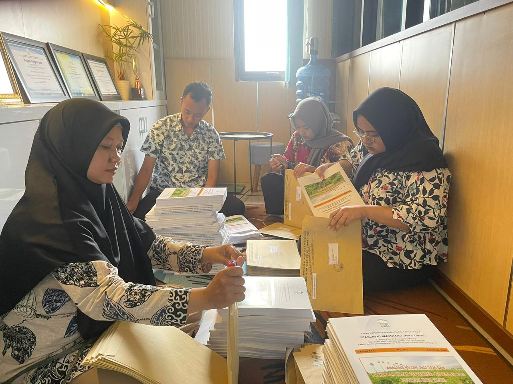
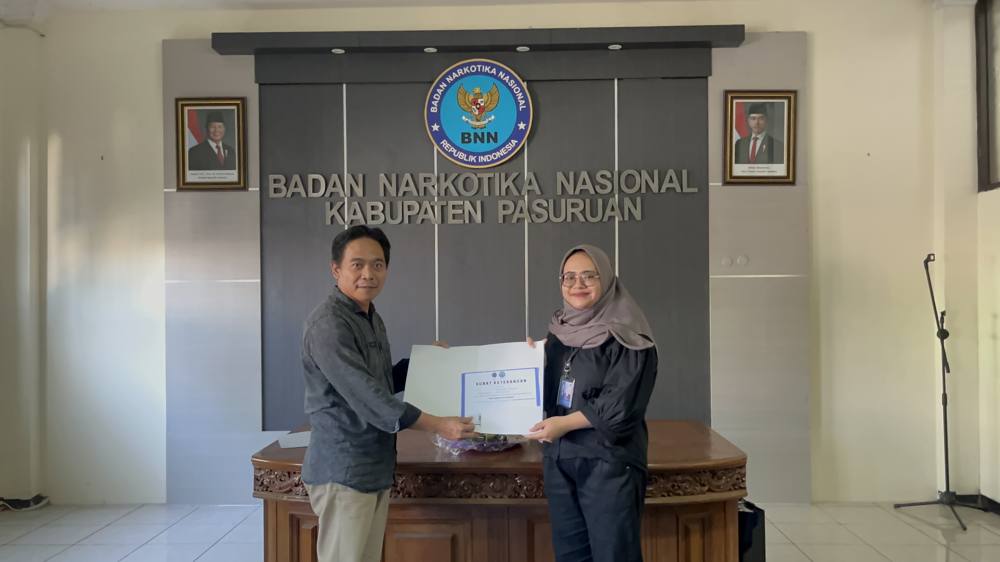

Experience

Unit Kearsipan I Universitas Brawijaya Kota Malang
Mengelola arsip institusi, termasuk dokumen fisik dan digital, dengan menerapkan sistempengarsipan yang efektif sesuai dengan standar universitas.

Badan Meteorologi, Klimatologi, dan Geofisika Kabupaten Malang
Mengelola arsip digital dan fisik yang terkait dengan data meteorologi, klimatologi, dangeofisika, memastikan ketersediaan dan keamanan dokumen sesuai dengan standar BMKG.

Badan Narkotika Nasional Kabupaten Pasuruan
Mengelola administrasi surat masuk dan surat keluar secara sistematis sesuai dengan proseduryang berlaku.